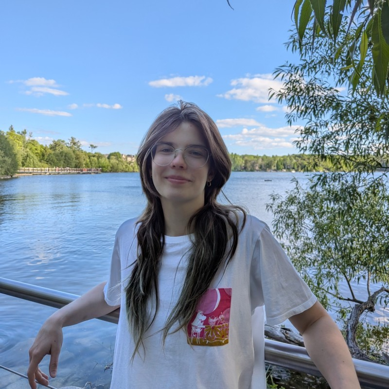

Currently a Toronto Metropolitan University Student in the New Media Program. Digging into the world of digital media, exploring the realms of creativity and technology. Passionate about storytelling, design, and innovation. Always eager to learn and grow in this dynamic field.
There is more where this came from! Just wait and see!